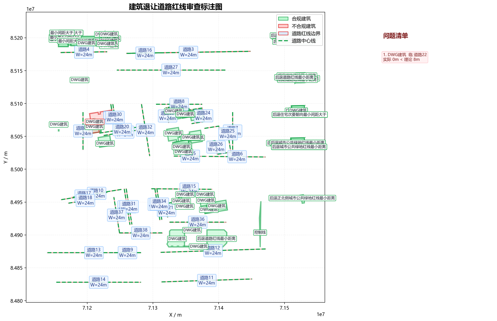

| 建筑名称 | 类型 | 高度(m) | 临接道路 | 实际让距(m) | 理论让距(m) | 判定 | 依据链 |
|---|---|---|---|---|---|---|---|
| DWG建筑_1 | 低层 | 9.60 | 道路2 | 41634.00 | 5.00 | 合规 | 表3-2：20m<道路红线宽度≤40m，低层建筑，退让=5.0m；第3款：道路交叉口四周建筑控制值5.0m |
| DWG建筑_1 | 低层 | 9.60 | 道路4 | 41634.00 | 5.00 | 合规 | 表3-2：20m<道路红线宽度≤40m，低层建筑，退让=5.0m；第3款：道路交叉口四周建筑控制值5.0m |
| DWG建筑_2 | 低层 | 9.60 | 道路35 | 36387.03 | 5.00 | 合规 | 表3-2：20m<道路红线宽度≤40m，低层建筑，退让=5.0m；非交叉口情形 |
| DWG建筑_3 | 多层 | 35.00 | 道路12 | 7144.12 | 8.00 | 合规 | 表3-2：20m<道路红线宽度≤40m，高层建筑，退让=8Q=8×1=8m；非交叉口情形 |
| 后退道路红线最小距离 | 低层 | 0.00 | 道路12 | 5196.65 | 5.00 | 合规 | 表3-2：20m<道路红线宽度≤40m，低层建筑，退让=5.0m；非交叉口情形 |
| DWG建筑_5 | 多层 | 35.00 | 道路36 | 11588.00 | 8.00 | 合规 | 表3-2：20m<道路红线宽度≤40m，高层建筑，退让=8Q=8×1=8m；非交叉口情形 |
| DWG建筑_6 | 多层 | 35.00 | 道路12 | 5977.58 | 8.00 | 合规 | 表3-2：20m<道路红线宽度≤40m，高层建筑，退让=8Q=8×1=8m；非交叉口情形 |
| DWG建筑_7 | 多层 | 24.18 | 道路21 | 1488.00 | 8.00 | 合规 | 表3-2：20m<道路红线宽度≤40m，高层建筑，退让=8Q=8×1=8m；非交叉口情形 |
| DWG建筑_8 | 多层 | 23.08 | 道路21 | 1488.00 | 8.00 | 合规 | 表3-2：20m<道路红线宽度≤40m，多层建筑，退让=8.0m；非交叉口情形 |
| DWG建筑_9 | 多层 | 24.18 | 道路21 | 8610.01 | 8.00 | 合规 | 表3-2：20m<道路红线宽度≤40m，高层建筑，退让=8Q=8×1=8m；非交叉口情形 |
| DWG建筑_10 | 多层 | 18.88 | 道路15 | 8079.44 | 8.00 | 合规 | 表3-2：20m<道路红线宽度≤40m，多层建筑，退让=8.0m；非交叉口情形 |
| DWG建筑_11 | 多层 | 18.88 | 道路15 | 5120.70 | 8.00 | 合规 | 表3-2：20m<道路红线宽度≤40m，多层建筑，退让=8.0m；非交叉口情形 |
| DWG建筑_12 | 多层 | 19.98 | 道路36 | 13231.48 | 8.00 | 合规 | 表3-2：20m<道路红线宽度≤40m，多层建筑，退让=8.0m；非交叉口情形 |
| DWG建筑_13 | 多层 | 19.98 | 道路36 | 13231.48 | 8.00 | 合规 | 表3-2：20m<道路红线宽度≤40m，多层建筑，退让=8.0m；非交叉口情形 |
| DWG建筑_14 | 多层 | 15.78 | 道路20 | 1653.61 | 8.00 | 合规 | 表3-2：20m<道路红线宽度≤40m，多层建筑，退让=8.0m；非交叉口情形 |
| DWG建筑_15 | 多层 | 15.78 | 道路20 | 2053.61 | 8.00 | 合规 | 表3-2：20m<道路红线宽度≤40m，多层建筑，退让=8.0m；非交叉口情形 |
| DWG建筑_16 | 多层 | 15.78 | 道路22 | 0.00 | 8.00 | 不合规 | 表3-2：20m<道路红线宽度≤40m，多层建筑，退让=8.0m；第3款：道路交叉口四周建筑控制值5.0m |
| DWG建筑_16 | 多层 | 15.78 | 道路28 | 0.00 | 8.00 | 不合规 | 表3-2：20m<道路红线宽度≤40m，多层建筑，退让=8.0m；第3款：道路交叉口四周建筑控制值5.0m |
| DWG建筑_17 | 多层 | 23.08 | 道路19 | 1822.39 | 8.00 | 合规 | 表3-2：20m<道路红线宽度≤40m，多层建筑，退让=8.0m；非交叉口情形 |
| DWG建筑_18 | 多层 | 23.08 | 道路5 | 6553.95 | 8.00 | 合规 | 表3-2：20m<道路红线宽度≤40m，多层建筑，退让=8.0m；非交叉口情形 |
| DWG建筑_19 | 多层 | 23.08 | 道路24 | 17972.96 | 8.00 | 合规 | 表3-2：20m<道路红线宽度≤40m，多层建筑，退让=8.0m；非交叉口情形 |
| DWG建筑_20 | 多层 | 24.18 | 道路5 | 3595.14 | 8.00 | 合规 | 表3-2：20m<道路红线宽度≤40m，高层建筑，退让=8Q=8×1=8m；非交叉口情形 |
| DWG建筑_21 | 多层 | 23.08 | 道路23 | 9824.82 | 8.00 | 合规 | 表3-2：20m<道路红线宽度≤40m，多层建筑，退让=8.0m；非交叉口情形 |
| DWG建筑_22 | 多层 | 23.08 | 道路5 | 3099.71 | 8.00 | 合规 | 表3-2：20m<道路红线宽度≤40m，多层建筑，退让=8.0m；非交叉口情形 |
| DWG建筑_23 | 多层 | 24.18 | 道路25 | 6762.52 | 8.00 | 合规 | 表3-2：20m<道路红线宽度≤40m，高层建筑，退让=8Q=8×1=8m；非交叉口情形 |
| DWG建筑_24 | 多层 | 23.08 | 道路24 | 17972.96 | 8.00 | 合规 | 表3-2：20m<道路红线宽度≤40m，多层建筑，退让=8.0m；非交叉口情形 |
| DWG建筑_25 | 多层 | 14.68 | 道路23 | 1488.00 | 8.00 | 合规 | 表3-2：20m<道路红线宽度≤40m，多层建筑，退让=8.0m；非交叉口情形 |
| DWG建筑_26 | 多层 | 14.68 | 道路24 | 1488.00 | 8.00 | 合规 | 表3-2：20m<道路红线宽度≤40m，多层建筑，退让=8.0m；非交叉口情形 |
| DWG建筑_26 | 多层 | 14.68 | 道路23 | 1488.00 | 8.00 | 合规 | 表3-2：20m<道路红线宽度≤40m，多层建筑，退让=8.0m；非交叉口情形 |
| DWG建筑_27 | 多层 | 14.68 | 道路23 | 1488.00 | 8.00 | 合规 | 表3-2：20m<道路红线宽度≤40m，多层建筑，退让=8.0m；非交叉口情形 |
| DWG建筑_27 | 多层 | 14.68 | 道路24 | 1488.00 | 8.00 | 合规 | 表3-2：20m<道路红线宽度≤40m，多层建筑，退让=8.0m；非交叉口情形 |
| 控制线 | 低层 | 0.00 | 道路12 | 2987.99 | 5.00 | 合规 | 表3-2：20m<道路红线宽度≤40m，低层建筑，退让=5.0m；非交叉口情形 |
| 最小间距大于 | 低层 | 0.00 | 道路4 | 10585.53 | 5.00 | 合规 | 表3-2：20m<道路红线宽度≤40m，低层建筑，退让=5.0m；第3款：道路交叉口四周建筑控制值5.0m |
| 最小间距大于 | 低层 | 0.00 | 道路2 | 10585.54 | 5.00 | 合规 | 表3-2：20m<道路红线宽度≤40m，低层建筑，退让=5.0m；第3款：道路交叉口四周建筑控制值5.0m |
| 最小间距大于 | 低层 | 0.00 | 道路4 | 17304.61 | 5.00 | 合规 | 表3-2：20m<道路红线宽度≤40m，低层建筑，退让=5.0m；第3款：道路交叉口四周建筑控制值5.0m |
| 最小间距大于 | 低层 | 0.00 | 道路2 | 17304.62 | 5.00 | 合规 | 表3-2：20m<道路红线宽度≤40m，低层建筑，退让=5.0m；第3款：道路交叉口四周建筑控制值5.0m |
| 最小间距大于 | 低层 | 0.00 | 道路4 | 9085.74 | 5.00 | 合规 | 表3-2：20m<道路红线宽度≤40m，低层建筑，退让=5.0m；第3款：道路交叉口四周建筑控制值5.0m |
| 最小间距大于 | 低层 | 0.00 | 道路2 | 9085.74 | 5.00 | 合规 | 表3-2：20m<道路红线宽度≤40m，低层建筑，退让=5.0m；第3款：道路交叉口四周建筑控制值5.0m |
| 最小间距大于 | 低层 | 0.00 | 道路4 | 8682.48 | 5.00 | 合规 | 表3-2：20m<道路红线宽度≤40m，低层建筑，退让=5.0m；第3款：道路交叉口四周建筑控制值5.0m |
| 最小间距大于 | 低层 | 0.00 | 道路2 | 8682.49 | 5.00 | 合规 | 表3-2：20m<道路红线宽度≤40m，低层建筑，退让=5.0m；第3款：道路交叉口四周建筑控制值5.0m |
| 最小间距大于 | 低层 | 0.00 | 道路4 | 11108.38 | 5.00 | 合规 | 表3-2：20m<道路红线宽度≤40m，低层建筑，退让=5.0m；第3款：道路交叉口四周建筑控制值5.0m |
| 最小间距大于 | 低层 | 0.00 | 道路2 | 11108.38 | 5.00 | 合规 | 表3-2：20m<道路红线宽度≤40m，低层建筑，退让=5.0m；第3款：道路交叉口四周建筑控制值5.0m |
| 最小间距大于 | 低层 | 0.00 | 道路4 | 23553.29 | 5.00 | 合规 | 表3-2：20m<道路红线宽度≤40m，低层建筑，退让=5.0m；第3款：道路交叉口四周建筑控制值5.0m |
| 最小间距大于 | 低层 | 0.00 | 道路2 | 23553.29 | 5.00 | 合规 | 表3-2：20m<道路红线宽度≤40m，低层建筑，退让=5.0m；第3款：道路交叉口四周建筑控制值5.0m |
| 最小间距大于 | 低层 | 0.00 | 道路4 | 28355.73 | 5.00 | 合规 | 表3-2：20m<道路红线宽度≤40m，低层建筑，退让=5.0m；第3款：道路交叉口四周建筑控制值5.0m |
| 最小间距大于 | 低层 | 0.00 | 道路2 | 28355.73 | 5.00 | 合规 | 表3-2：20m<道路红线宽度≤40m，低层建筑，退让=5.0m；第3款：道路交叉口四周建筑控制值5.0m |
| 最小间距大于 | 低层 | 0.00 | 道路4 | 28562.32 | 5.00 | 合规 | 表3-2：20m<道路红线宽度≤40m，低层建筑，退让=5.0m；第3款：道路交叉口四周建筑控制值5.0m |
| 最小间距大于 | 低层 | 0.00 | 道路2 | 28562.32 | 5.00 | 合规 | 表3-2：20m<道路红线宽度≤40m，低层建筑，退让=5.0m；第3款：道路交叉口四周建筑控制值5.0m |
| 最小间距大于 | 低层 | 0.00 | 道路4 | 28673.46 | 5.00 | 合规 | 表3-2：20m<道路红线宽度≤40m，低层建筑，退让=5.0m；第3款：道路交叉口四周建筑控制值5.0m |
| 最小间距大于 | 低层 | 0.00 | 道路2 | 28673.47 | 5.00 | 合规 | 表3-2：20m<道路红线宽度≤40m，低层建筑，退让=5.0m；第3款：道路交叉口四周建筑控制值5.0m |
| DWG建筑_38 | 低层 | 9.60 | 道路4 | 9740.36 | 5.00 | 合规 | 表3-2：20m<道路红线宽度≤40m，低层建筑，退让=5.0m；第3款：道路交叉口四周建筑控制值5.0m |
| DWG建筑_38 | 低层 | 9.60 | 道路2 | 9740.36 | 5.00 | 合规 | 表3-2：20m<道路红线宽度≤40m，低层建筑，退让=5.0m；第3款：道路交叉口四周建筑控制值5.0m |
| DWG建筑_39 | 低层 | 9.60 | 道路4 | 9333.79 | 5.00 | 合规 | 表3-2：20m<道路红线宽度≤40m，低层建筑，退让=5.0m；第3款：道路交叉口四周建筑控制值5.0m |
| DWG建筑_39 | 低层 | 9.60 | 道路2 | 9333.80 | 5.00 | 合规 | 表3-2：20m<道路红线宽度≤40m，低层建筑，退让=5.0m；第3款：道路交叉口四周建筑控制值5.0m |
| DWG建筑_40 | 低层 | 9.60 | 道路4 | 10265.84 | 5.00 | 合规 | 表3-2：20m<道路红线宽度≤40m，低层建筑，退让=5.0m；第3款：道路交叉口四周建筑控制值5.0m |
| DWG建筑_40 | 低层 | 9.60 | 道路2 | 10265.85 | 5.00 | 合规 | 表3-2：20m<道路红线宽度≤40m，低层建筑，退让=5.0m；第3款：道路交叉口四周建筑控制值5.0m |
| DWG建筑_41 | 低层 | 9.60 | 道路4 | 22704.80 | 5.00 | 合规 | 表3-2：20m<道路红线宽度≤40m，低层建筑，退让=5.0m；第3款：道路交叉口四周建筑控制值5.0m |
| DWG建筑_41 | 低层 | 9.60 | 道路2 | 22704.81 | 5.00 | 合规 | 表3-2：20m<道路红线宽度≤40m，低层建筑，退让=5.0m；第3款：道路交叉口四周建筑控制值5.0m |
| DWG建筑_42 | 低层 | 9.60 | 道路4 | 7710.36 | 5.00 | 合规 | 表3-2：20m<道路红线宽度≤40m，低层建筑，退让=5.0m；第3款：道路交叉口四周建筑控制值5.0m |
| DWG建筑_42 | 低层 | 9.60 | 道路2 | 7710.37 | 5.00 | 合规 | 表3-2：20m<道路红线宽度≤40m，低层建筑，退让=5.0m；第3款：道路交叉口四周建筑控制值5.0m |
| DWG建筑_43 | 低层 | 9.60 | 道路4 | 9610.36 | 5.00 | 合规 | 表3-2：20m<道路红线宽度≤40m，低层建筑，退让=5.0m；第3款：道路交叉口四周建筑控制值5.0m |
| DWG建筑_43 | 低层 | 9.60 | 道路2 | 9610.37 | 5.00 | 合规 | 表3-2：20m<道路红线宽度≤40m，低层建筑，退让=5.0m；第3款：道路交叉口四周建筑控制值5.0m |
| DWG建筑_44 | 低层 | 9.60 | 道路4 | 8110.36 | 5.00 | 合规 | 表3-2：20m<道路红线宽度≤40m，低层建筑，退让=5.0m；第3款：道路交叉口四周建筑控制值5.0m |
| DWG建筑_44 | 低层 | 9.60 | 道路2 | 8110.37 | 5.00 | 合规 | 表3-2：20m<道路红线宽度≤40m，低层建筑，退让=5.0m；第3款：道路交叉口四周建筑控制值5.0m |
| DWG建筑_45 | 低层 | 9.60 | 道路4 | 23210.36 | 5.00 | 合规 | 表3-2：20m<道路红线宽度≤40m，低层建筑，退让=5.0m；第3款：道路交叉口四周建筑控制值5.0m |
| DWG建筑_45 | 低层 | 9.60 | 道路2 | 23210.37 | 5.00 | 合规 | 表3-2：20m<道路红线宽度≤40m，低层建筑，退让=5.0m；第3款：道路交叉口四周建筑控制值5.0m |
| DWG建筑_46 | 低层 | 9.60 | 道路4 | 9610.36 | 5.00 | 合规 | 表3-2：20m<道路红线宽度≤40m，低层建筑，退让=5.0m；第3款：道路交叉口四周建筑控制值5.0m |
| DWG建筑_46 | 低层 | 9.60 | 道路2 | 9610.37 | 5.00 | 合规 | 表3-2：20m<道路红线宽度≤40m，低层建筑，退让=5.0m；第3款：道路交叉口四周建筑控制值5.0m |
| DWG建筑_47 | 低层 | 9.60 | 道路4 | 7766.85 | 5.00 | 合规 | 表3-2：20m<道路红线宽度≤40m，低层建筑，退让=5.0m；第3款：道路交叉口四周建筑控制值5.0m |
| DWG建筑_47 | 低层 | 9.60 | 道路2 | 7766.85 | 5.00 | 合规 | 表3-2：20m<道路红线宽度≤40m，低层建筑，退让=5.0m；第3款：道路交叉口四周建筑控制值5.0m |
| DWG建筑_48 | 低层 | 9.60 | 道路4 | 10010.28 | 5.00 | 合规 | 表3-2：20m<道路红线宽度≤40m，低层建筑，退让=5.0m；第3款：道路交叉口四周建筑控制值5.0m |
| DWG建筑_48 | 低层 | 9.60 | 道路2 | 10010.29 | 5.00 | 合规 | 表3-2：20m<道路红线宽度≤40m，低层建筑，退让=5.0m；第3款：道路交叉口四周建筑控制值5.0m |
| 后退道路红线最小距离 | 低层 | 0.00 | 道路1 | 63189.69 | 5.00 | 合规 | 表3-2：20m<道路红线宽度≤40m，低层建筑，退让=5.0m；第3款：道路交叉口四周建筑控制值5.0m |
| 后退道路红线最小距离 | 低层 | 0.00 | 道路3 | 63189.73 | 5.00 | 合规 | 表3-2：20m<道路红线宽度≤40m，低层建筑，退让=5.0m；第3款：道路交叉口四周建筑控制值5.0m |
| 后退道路红线最小距离 | 低层 | 0.00 | 道路1 | 63335.39 | 5.00 | 合规 | 表3-2：20m<道路红线宽度≤40m，低层建筑，退让=5.0m；第3款：道路交叉口四周建筑控制值5.0m |
| 后退道路红线最小距离 | 低层 | 0.00 | 道路3 | 63335.42 | 5.00 | 合规 | 表3-2：20m<道路红线宽度≤40m，低层建筑，退让=5.0m；第3款：道路交叉口四周建筑控制值5.0m |
| 后退道路红线最小距离 | 低层 | 0.00 | 道路1 | 63753.51 | 5.00 | 合规 | 表3-2：20m<道路红线宽度≤40m，低层建筑，退让=5.0m；第3款：道路交叉口四周建筑控制值5.0m |
| 后退道路红线最小距离 | 低层 | 0.00 | 道路3 | 63753.55 | 5.00 | 合规 | 表3-2：20m<道路红线宽度≤40m，低层建筑，退让=5.0m；第3款：道路交叉口四周建筑控制值5.0m |
| 后退道路红线最小距离 | 低层 | 0.00 | 道路1 | 64110.76 | 5.00 | 合规 | 表3-2：20m<道路红线宽度≤40m，低层建筑，退让=5.0m；第3款：道路交叉口四周建筑控制值5.0m |
| 后退道路红线最小距离 | 低层 | 0.00 | 道路3 | 64110.80 | 5.00 | 合规 | 表3-2：20m<道路红线宽度≤40m，低层建筑，退让=5.0m；第3款：道路交叉口四周建筑控制值5.0m |
| 后退道路红线最小距离 | 低层 | 0.00 | 道路1 | 72020.95 | 5.00 | 合规 | 表3-2：20m<道路红线宽度≤40m，低层建筑，退让=5.0m；第3款：道路交叉口四周建筑控制值5.0m |
| 后退道路红线最小距离 | 低层 | 0.00 | 道路3 | 72020.98 | 5.00 | 合规 | 表3-2：20m<道路红线宽度≤40m，低层建筑，退让=5.0m；第3款：道路交叉口四周建筑控制值5.0m |
| 后退道路红线最小距离 | 低层 | 0.00 | 道路1 | 71999.36 | 5.00 | 合规 | 表3-2：20m<道路红线宽度≤40m，低层建筑，退让=5.0m；第3款：道路交叉口四周建筑控制值5.0m |
| 后退道路红线最小距离 | 低层 | 0.00 | 道路3 | 71999.39 | 5.00 | 合规 | 表3-2：20m<道路红线宽度≤40m，低层建筑，退让=5.0m；第3款：道路交叉口四周建筑控制值5.0m |
| 后退道路红线最小距离 | 低层 | 0.00 | 道路1 | 68140.63 | 5.00 | 合规 | 表3-2：20m<道路红线宽度≤40m，低层建筑，退让=5.0m；第3款：道路交叉口四周建筑控制值5.0m |
| 后退道路红线最小距离 | 低层 | 0.00 | 道路3 | 68140.66 | 5.00 | 合规 | 表3-2：20m<道路红线宽度≤40m，低层建筑，退让=5.0m；第3款：道路交叉口四周建筑控制值5.0m |
| 后退道路红线最小距离 | 低层 | 0.00 | 道路1 | 71999.36 | 5.00 | 合规 | 表3-2：20m<道路红线宽度≤40m，低层建筑，退让=5.0m；第3款：道路交叉口四周建筑控制值5.0m |
| 后退道路红线最小距离 | 低层 | 0.00 | 道路3 | 71999.39 | 5.00 | 合规 | 表3-2：20m<道路红线宽度≤40m，低层建筑，退让=5.0m；第3款：道路交叉口四周建筑控制值5.0m |
| 后退道路红线最小距离 | 低层 | 0.00 | 道路1 | 68140.63 | 5.00 | 合规 | 表3-2：20m<道路红线宽度≤40m，低层建筑，退让=5.0m；第3款：道路交叉口四周建筑控制值5.0m |
| 后退道路红线最小距离 | 低层 | 0.00 | 道路3 | 68140.66 | 5.00 | 合规 | 表3-2：20m<道路红线宽度≤40m，低层建筑，退让=5.0m；第3款：道路交叉口四周建筑控制值5.0m |
| 后退道路红线最小距离 | 低层 | 0.00 | 道路1 | 75909.43 | 5.00 | 合规 | 表3-2：20m<道路红线宽度≤40m，低层建筑，退让=5.0m；第3款：道路交叉口四周建筑控制值5.0m |
| 后退道路红线最小距离 | 低层 | 0.00 | 道路3 | 75909.46 | 5.00 | 合规 | 表3-2：20m<道路红线宽度≤40m，低层建筑，退让=5.0m；第3款：道路交叉口四周建筑控制值5.0m |
| 后退道路红线最小距离 | 低层 | 0.00 | 道路1 | 76288.13 | 5.00 | 合规 | 表3-2：20m<道路红线宽度≤40m，低层建筑，退让=5.0m；第3款：道路交叉口四周建筑控制值5.0m |
| 后退道路红线最小距离 | 低层 | 0.00 | 道路3 | 76288.17 | 5.00 | 合规 | 表3-2：20m<道路红线宽度≤40m，低层建筑，退让=5.0m；第3款：道路交叉口四周建筑控制值5.0m |
| 后退道路红线最小距离 | 低层 | 0.00 | 道路1 | 76652.83 | 5.00 | 合规 | 表3-2：20m<道路红线宽度≤40m，低层建筑，退让=5.0m；第3款：道路交叉口四周建筑控制值5.0m |
| 后退道路红线最小距离 | 低层 | 0.00 | 道路3 | 76652.86 | 5.00 | 合规 | 表3-2：20m<道路红线宽度≤40m，低层建筑，退让=5.0m；第3款：道路交叉口四周建筑控制值5.0m |
| 后退道路红线最小距离 | 低层 | 0.00 | 道路1 | 78822.15 | 5.00 | 合规 | 表3-2：20m<道路红线宽度≤40m，低层建筑，退让=5.0m；第3款：道路交叉口四周建筑控制值5.0m |
| 后退道路红线最小距离 | 低层 | 0.00 | 道路3 | 78822.18 | 5.00 | 合规 | 表3-2：20m<道路红线宽度≤40m，低层建筑，退让=5.0m；第3款：道路交叉口四周建筑控制值5.0m |
| 后退道路红线最小距离 | 低层 | 0.00 | 道路1 | 76151.39 | 5.00 | 合规 | 表3-2：20m<道路红线宽度≤40m，低层建筑，退让=5.0m；第3款：道路交叉口四周建筑控制值5.0m |
| 后退道路红线最小距离 | 低层 | 0.00 | 道路3 | 76151.43 | 5.00 | 合规 | 表3-2：20m<道路红线宽度≤40m，低层建筑，退让=5.0m；第3款：道路交叉口四周建筑控制值5.0m |
| DWG建筑_63 | 低层 | 9.60 | 道路6 | 74448.34 | 5.00 | 合规 | 表3-2：20m<道路红线宽度≤40m，低层建筑，退让=5.0m；非交叉口情形 |
| DWG建筑_64 | 低层 | 9.60 | 道路6 | 75059.45 | 5.00 | 合规 | 表3-2：20m<道路红线宽度≤40m，低层建筑，退让=5.0m；非交叉口情形 |
| DWG建筑_65 | 低层 | 9.60 | 道路6 | 74782.26 | 5.00 | 合规 | 表3-2：20m<道路红线宽度≤40m，低层建筑，退让=5.0m；非交叉口情形 |
| 后退住宅次要朝向最小间距大于 | 低层 | 0.00 | 道路6 | 79946.18 | 5.00 | 合规 | 表3-2：20m<道路红线宽度≤40m，低层建筑，退让=5.0m；非交叉口情形 |
| 后退住宅次要朝向最小间距大于 | 低层 | 0.00 | 道路6 | 79821.80 | 5.00 | 合规 | 表3-2：20m<道路红线宽度≤40m，低层建筑，退让=5.0m；非交叉口情形 |
| 后退城市公共绿地红线最小距离 | 低层 | 0.00 | 道路6 | 41270.60 | 5.00 | 合规 | 表3-2：20m<道路红线宽度≤40m，低层建筑，退让=5.0m；非交叉口情形 |
| 后退城市公共绿地红线最小距离 | 低层 | 0.00 | 道路6 | 41931.39 | 5.00 | 合规 | 表3-2：20m<道路红线宽度≤40m，低层建筑，退让=5.0m；非交叉口情形 |
| 后退城市公共绿地红线最小距离 | 低层 | 0.00 | 道路6 | 41677.67 | 5.00 | 合规 | 表3-2：20m<道路红线宽度≤40m，低层建筑，退让=5.0m；非交叉口情形 |
| 后退城市公共绿地红线最小距离 | 低层 | 0.00 | 道路6 | 49858.12 | 5.00 | 合规 | 表3-2：20m<道路红线宽度≤40m，低层建筑，退让=5.0m；非交叉口情形 |
| 后退城市公共绿地红线最小距离 | 低层 | 0.00 | 道路6 | 49665.68 | 5.00 | 合规 | 表3-2：20m<道路红线宽度≤40m，低层建筑，退让=5.0m；非交叉口情形 |
| 后退正北侧城市公共绿地红线最小距离 | 低层 | 0.00 | 道路6 | 78529.31 | 5.00 | 合规 | 表3-2：20m<道路红线宽度≤40m，低层建筑，退让=5.0m；非交叉口情形 |
建筑内部仅保留短标签；绿色为合规建筑，红色为不合规建筑；道路红线为红色边界，中心线为绿色虚线，右侧为问题清单图例。

合规建筑：45 栋；不合规建筑：1 栋。
t_convert=0.7992s t_parse=0.7074s t_review=0.0594s t_render=0.6981s t_total=2.2642s